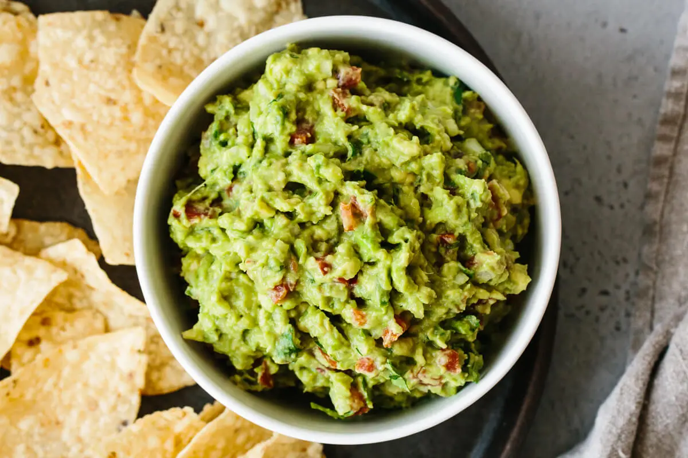

Guacamole

Description
Guacamole is an avocado-based dip or spread that originated in Mexico.
It's typically made with mashed avocado and lime juice, then seasoned with salt and cilantro.
Guacamole often contains tomatoes and onions.
Ingredients
- Avocados
- lime
- Salt
- Vegetables
- Herbs and Spices
Steps
- Mash avocados, lime juice, and salt together in a medium bowl
mix in tomatoes, onion, cilantro, and garlic. Stir in cayenne pepper.
- Serve immediately, or cover and refrigerate for 1 hour for improved flavor.